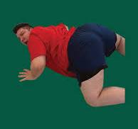

Desde que nació, Esteban siempre fue un niño especial. No por sus grandes habilidades o por su inteligencia deslumbrante, sino por su insaciable amor por la comida. Desde que era un bebé, su familia sabía que tenían un pequeño glotón en casa.
A medida que crecía, Esteban desarrolló un talento único: podía comer más rápido que cualquier otra persona en la mesa. No importaba si era una ensalada o una hamburguesa doble, Esteban lo devoraba todo con una sonrisa en el rostro (y un poco de salsa en las mejillas).
En la escuela, era famoso por sus épicas meriendas. Los niños le miraban con asombro mientras Esteban sacaba de su mochila una cantidad interminable de snacks y dulces. Sin embargo, Esteban no solo era conocido por su apetito voraz. También era un gran comediante. Le encantaba hacer reír a sus amigos con sus ocurrencias y sus poses graciosas.
A pesar de su tamaño, Esteban siempre se mantuvo activo. Se inscribió en clases de baile, donde sorprendió a todos con su agilidad y energía. Sus profesores no podían creer que alguien con tanto peso pudiera moverse con tanta gracia.
Y así fue como Esteban vivió su vida, siempre con una sonrisa y una broma en la punta de la lengua. Nunca dejó que su peso le impidiera disfrutar de las cosas que amaba. Para él, la vida era una gran aventura llena de risas, comida deliciosa y buenos amigos.
Y así, nuestro querido Esteban siguió conquistando el mundo, un bocado a la vez.